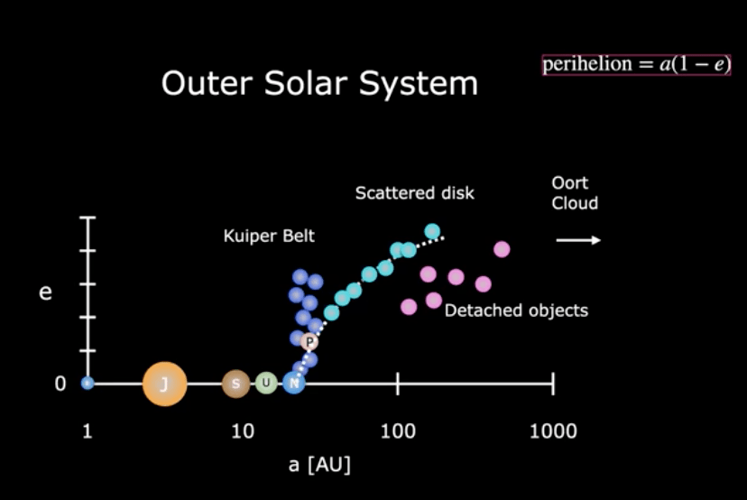
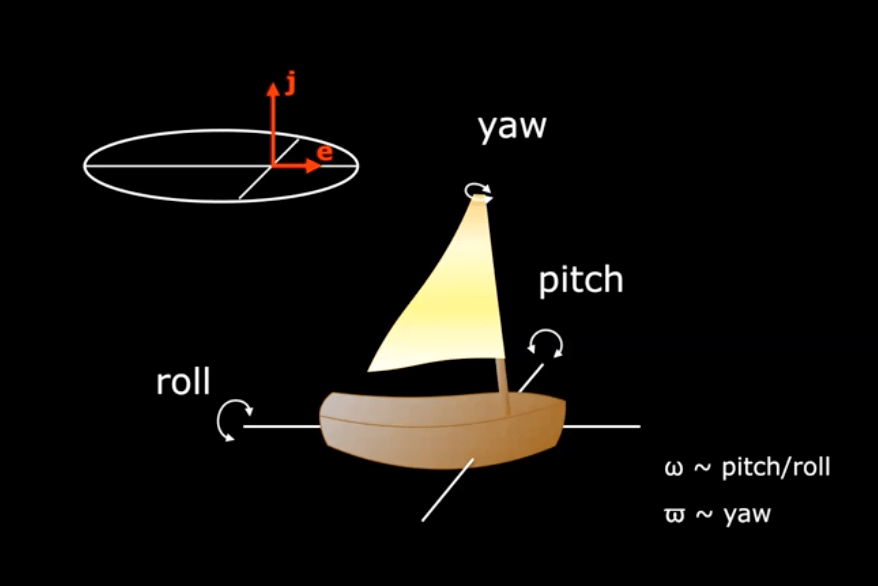
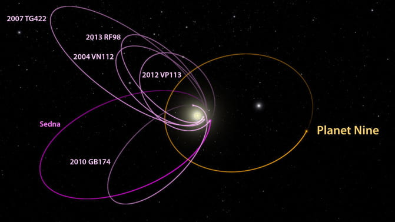
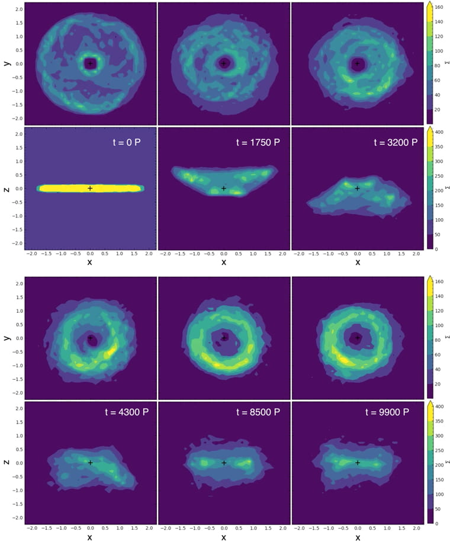
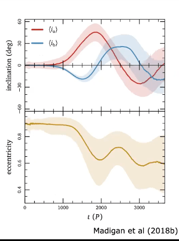

Title: Collective Gravity in the Outer Solar System
Presenter:
Ann-Marie Madigan
Presenter’s Institution: University of Colorado Boulder
Talk series: Geo. Sci. Seminar
1) Seminar Summary
Motivation

Figure1: The semi-major axis of planets and low-mass bodies plotted against their eccentricities. The planets are labeled by the first letter of its name: E - Earth; J - Jupiter; S -Saturn; U - Uranus; N - Neptune; P - Pluto (not a planet). The different colors mark low-mass bodies belonging to different groups with the name next to them.
Something very odd is going on in the outer solar system. Where is that? What's in there? Figure 1 shows the semi-major axes (size of the orbits) on a log scale versus eccentricity (shape of the orbits) of the bodies in our solar system. The big closed circles denote the planets all on very circular orbits, except Pluto. Pluto is not a planet but part of the Kuiper Belt, a disk of icy planetesimals. And further, there is a structure called scattered disk, where the odd things start to occur. The low-mass icy bodies on the scattered disk show an interesting orbital shaping. As they go further, their eccentricities tend to be higher following a curve shown in Figure1. Since the location of perihelion (the nearest point in the orbit around the sun) is $latex a(1-e)$ where $latex a$ is the semi-major axis and $latex e$ is eccentricity, this trend suggests their perihelions are fairly the same, which can be explained by their origins. The icy bodies in the scattered disk are believed to be formed in the inner disk and then be scattered to the outer disk by the giant planets and the perihelion is where they encounter the giant planet, so their perihelions should be close to the giant planets' orbits, in this case, the Neptune' orbit. The odd thing is a population called detached objects. Their semi-major axes are in the range of the scattered disk, but they don' belong to it because their eccentricities are too small, which leads to larger perihelions further from Neptune. It indicated that their dynamics can not be explained by the scattering with Neptune, especially considering all other odd behaviors of those objects. Below listed all the mysteries about those detached objects:

Ann-Marie's genius idea: To think the orbit as a boat. This diagram shows how to relate the orbital elements with the motion of the orbit(boat).
- Detached with perihelion >40 AU
Why are they detached from the scattered disk? Why don't they touch the Neptune?
Their inclinations can be as high as 54 degrees, which is difficult to be explained by our current solar system model.
- Clustering in $latex \omega$(tilt)
The orbits are titled in a similar way.
- Clustering in $latex \varpi$ (physical space)
The orbits are actually clustered together.

Caltech astronomers suggested in 2016 that orbits of these 6 extreme trans-Neptunian objects (in magenta) – all mysteriously aligned in one direction – might be explained by the presence of a Planet Nine (in orange) in our solar system. Despite searches, no Planet Nine has yet been found. Image via Caltech/R. Hurt (IPAC).
One theory suggests that a ninth planet lurking beyond Neptune may have kicked up the orbits of these detached objects. Planet 9 could be an icy giant with 10 Earth-mass on a very spectacular orbit with a semi-major axis of 600 AU and an eccentricity of 0.6 and this orbit is inclined by 30 degrees. (See the right figure.) That is just one possibility, playing around those values can still get similar results, and astronomers around the world have been searching for it since 2016, but no one has found it yet.
But Madigan argues that no Planet 9 would be needed. Her team's work shows that the minor planets self-organizing can do the same things and even more.
Methods
The planets organize themself through the gravitational interactions with each other. There are two major processes that may help us build the physical intuition of the dynamics in this system. The first one is the gravitational scattering. It is the deflection of the paths of particles passing near a massive body. The closer they get to each other, the stronger the scattering is. Another one is secular dynamics. It means some important long-term effects, which can be seen produced by the shapes and orientations of their orbits (eccentricities, apse locations, inclinations, and nodes). For secular dynamics, we average over orbital timescales and we can consider planets as elliptical wires of nonuniform density, with density corresponding to the time spent at a given phase of the orbit according to Kepler’s second law. In this way, we could easily picture the torque from one orbit on another by considering their angular momentum's direction.
They performed N-body simulations to investigate the long-term behavior of the scattered disk containing numerous low-mass bodies. For simplification, they apply an idealized disk model with an initial setup chosen in place of a scattered disk configuration as higher particle density is needed to see the behaviors of the detached objects. As the Newtonian N-body problem is scale-free, they set the semimajor axis a distribution drawn uniformly in [0.9, 1.1] and apply the results to different semimajor axes by scaling the timescale.
Results

Figure1: The surface density of the disk at different times showing mode development in x–y plane (top rows) and x–z plane (bottom rows). Time progresses from top left to bottom right. The initially flat disk undergoes the inclination instability, buckling out above the x–y plane and dropping in orbital eccentricity (t ~ 1750 P).
Figure1 shows the surface density evolution of the disk with face-on and edge-on lines of sight. The orbits incline out of the plane, collectively pitching over their semi-latus rectum and rolling over their major axis. Collectively, the orbits describe a cone shape. They drop in eccentricity as they incline, visibly contracting the surface area of the disk. That is because lower eccentricity pushes back their perihelion, which could explain the detached objects. It suggests that the inclination instability could lead to the apsidal clustering.
In Figure 2, $latex i_a$ measures how much the orbit is rolling, and $latex i_b$ measures how much the orbit is pitching. Figure 2 shows the normalized mean orbital properties. As inclination increases exponentially, eccentricities decrease. As perihelion is $latex a(1-e)$, it suggests a clustering in argument of perihelion. Their simulation results do show the clustering of the apsidal and the strength of apsidal clustering is getting stronger as the number of particles in simulation increases.

Figure 2: The time series of different orbital elements. The upper panel shows the evolution of inclinations, while the lower panel shows the evolution of eccentricity.
Conclusion
Their simulation has shown that the gravitational interaction among the low-mass bodies can produce observed structures from an axisymmetric disk and that this structure is likely stable at large N(the number of particles). The drop in eccentricity isolates the system. The isolated nature of the system and the increased strength of the phenomenon with N, suggest that the structure should be stable over a long timescale.
Apart from those 4 characteristics listed before, the results also show that there should be a perihelion gap at ~200 - 600 AU, which is consistent with the observation. Planet 9 theory cannot explain this structure.
For me personally, the take-home points are:
-
Observations reveal many unusual orbital features in the population of detached objects at the edges of our solar system. They have detached perihelion from the normal scattered disk and higher inclinations. They are clustering in both tilt and physical space.
- Astronomers proposed a Planet Nine in 2016 and have been searching for it. Yet no one has spotted it. Meanwhile, this study suggests we might not need a Planet Nine to explain it but the minor planets self-organizing can do the same things and even more.
- The Newtonian N-body problem is scale-free, so we can set the semimajor axis in the inner region and apply the results to different semimajor axes by scaling the timescale.
Reference:
- Zderic, A., Collier, A., Tiongco, M., & Madigan, A.-M. 2020, ApJ, 895, L27
2) Back of the envelope calculation
a) Question: Will the Apsidal Clustering following the Inclination Instability Occur in a Planetary System around an Early-Type Star within its lifetime?
b) Solution Strategy:
One of the most interesting points to me in this paper is that the Newtonian N-body problem is scale-free, so we can arbitrarily choose the initial range of the semi-major axes and apply the results to different semi-major axes by scaling the timescale. So if we apply the results to a different star, we should consider the generalized Kepler’s third law:
$latex P \propto (\frac{a^3}{M})^{1/2}$
So the scaled orbital period should be
$latex P_* = (\frac{a_*^3}{a_\odot^3}\frac{M_\odot}{M_*})^{1/2}{P_\odot}$
And according to Zderic et al 2020, the inclination instability scales with the secular timescale,
$latex t_{sec} \propto \frac{M}{M_d}P_*$
where $latex M_d$ is the mass of disk (total mass of the low-mass bodies).
c) Quantitative Estimates & Data Gathering:
- Fixed semi-major axis at 100 AU
Zderic et al (2020) suggest that at ∼5000P, the orbit becomes transiently trapped in the m=1 mode. Here we accept the order of magnitude of $latex 1000P$ as the instability timescale.
For our solar system, If we fix the semi-major axis at 100 AU, $latex P _\odot= 10^3 yrs$
I take two cases of O3 and O6 stars separately [
data from wiki],
O3: $latex 60 M_\odot $; lifetime: 3 million yrs
O7: $latex 30 M_\odot $; lifetime: 11 million yrs
If we fix the location of the scattered disk at 100AU, then we need to scale the orbital period with the stellar mass
$latex P_{O3} = (\frac{M_\odot}{M_{O3}})^{1/2} P_\odot = 0.13 P_\odot$
$latex P_{O7} = (\frac{M_\odot}{M_{O3}})^{1/2} P_\odot = 0.18 P_\odot$
If we consider the same ratio of the disk mass to stellar mass as our solar system($latex \frac{M_d}{M}=10^{-3}$), the instability timescale for the stars should be:
$latex t_{O3} = 1000 P_* = 1.3 \times 10^5 yrs < 3 Myrs$
,
$latex t_{O7}=1000 P_* = 1.8 \times 10^5 yrs < 11Myrs$
- All scales with stellar mass.
Since the location of the scattered disk is probably related to things that depend on temperature like where icy planetesimals form, I fix the solar insolation $latex F = \frac{L}{4\pi a^2}$
Applying the
stellar mass-luminosity relation:
$latex L= L_{\odot}(\frac{M_\odot}{M})^{3.5}$
So the semi-major axis $latex a = (\frac{M_\odot}{M})^{7/4} a_\odot$
Let's then scale the orbital period with stellar mass,
$latex P \propto \frac{a^3}{M}; P = (\frac{M\odot}{M})^{25/4}P_\odot$
Also, as the lifetime on the main sequence is proportional to the stellar mass divided by the luminosity, the stellar lifetime can then be expressed as
$latex \tau = 10^{10} (\frac{M_\odot }{M})^{2.5} yrs$
Let $latex \tau > 1000 P$, we get
$latex M>(\frac{P_\odot}{10^7})^{4/15} M_\odot = 0.08 M_\odot$
d) Conclusions & Reflection:
- Fixed semi-major axis at 100 AU
If we assume the scattered disk around O-type star is also located as 100 AU and the ratio of disk mass to stellar mass is the same as the solar system, then the instability timescale for O3 type star is one order of magnitude smaller than its lifetime and it's two orders of magnitude smaller for O7 type star. So yes, in this case the apsidal clustering following the inclination instability will occur in a planetary system around O3-type and O7-type stars within its lifetime.
But considering the ratio of disk mass to stellar mass could vary from the planetary systems, the instability timescale could exceed the lifetime. For example, if we decrease the ratio by two orders of magnitude ($latex \frac{M_d}{M}=10^{-5}$), the instability timescale should be 100 times longer than before, which is 13 Myrs for O3 star and is larger than the lifetime of 3 Myrs. In that case, we won't see the inclination instability occur in the scattered disk before the star evolves into the ref giant phase. So no solid conclusion could be drawn until we have more information to constrain the disk mass.
This calculation suggests that not only could the physical condition of a planetary systems could influence its dynamical evolution, but the timescale also might be a determining factor sometimes.
- All scales with stellar mass.
The result surprises me! For the scattered disk with the constant solar insolation, only if the mass of the host star is larger than 0.08 Solar Mass that is exactly the lower mass limit for a star with nuclear reaction, the apsidal clustering following the inclination instability will happen.
Post Tags
OOM